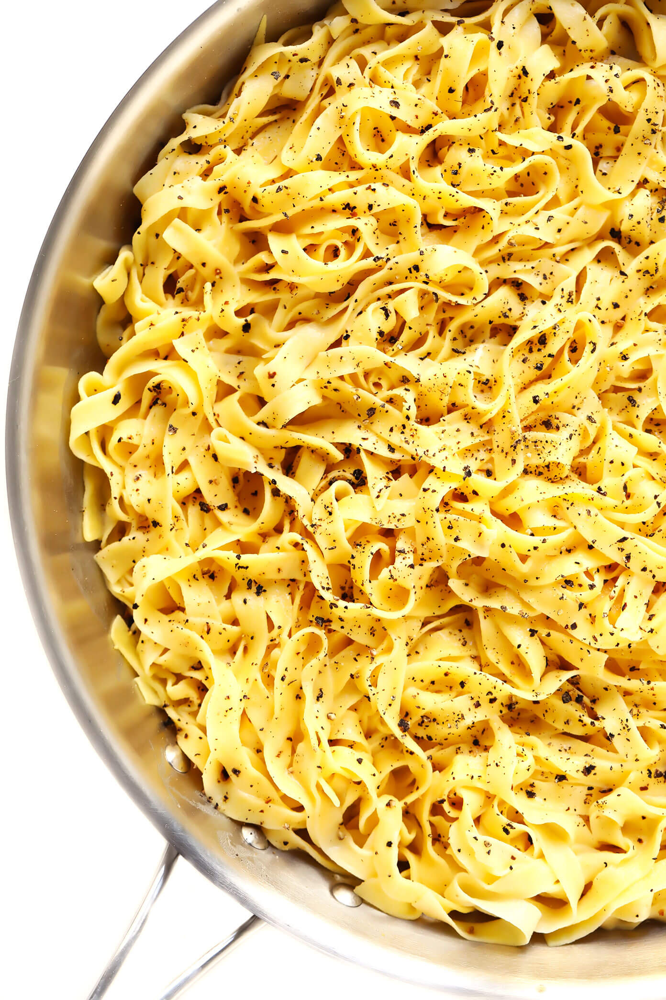
Homemade pasta
My favorite 4-ingredient homemade pasta recipe — easy to make by hand, in a mixer, or in a food processor.
Flour
Egg
Olive oil
Sea salt
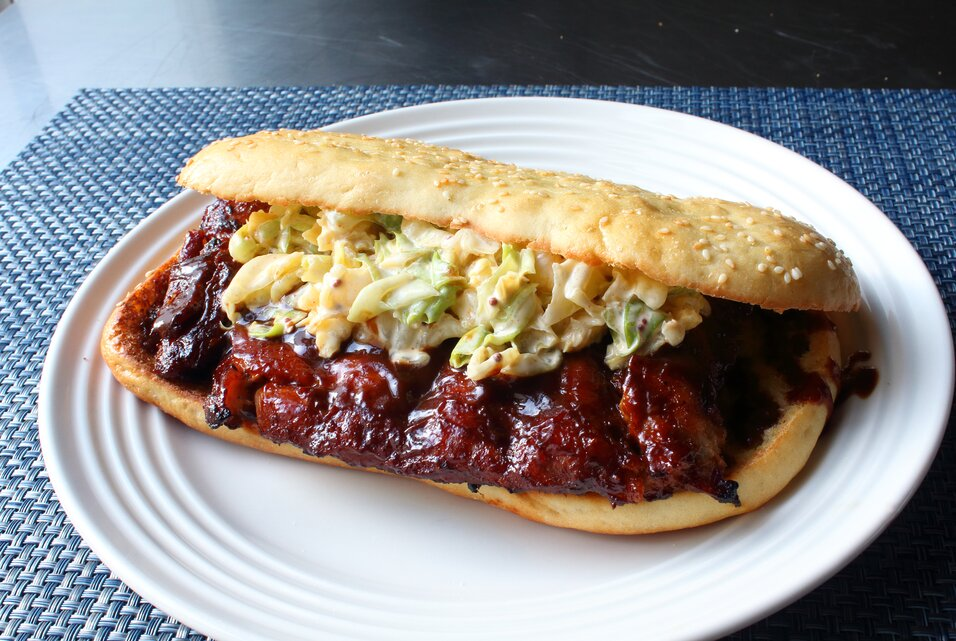
McRib Sandwich
Boneless baby back rib sandwich glaze until brown and soft.
Kosher salt
Brown sugar
Chili powder
Pork ribs
Barbecue sauce
Coleslaw
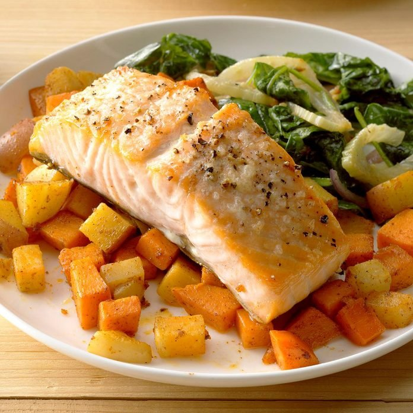
Salmon with Root Vegetables
This cozy hash is loaded with protein and healthy fats that keep you going on busy days.
Olive oil
Sweet potatoes
Red potatoes
Carrots
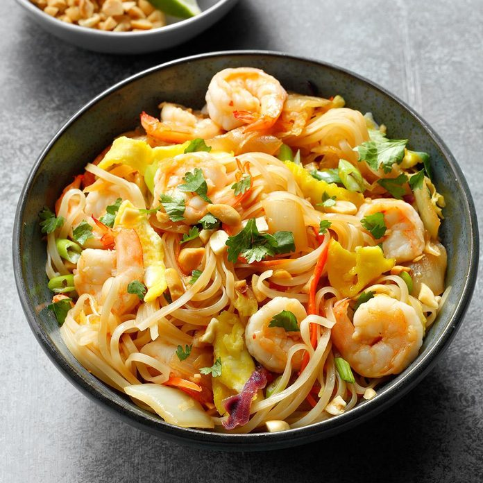
Shrimp Pad Thai
You can make this yummy Thai classic in no time.
Rice noodles
Shrimp
Oil
Onion
Garlic
Egg
Green Onion
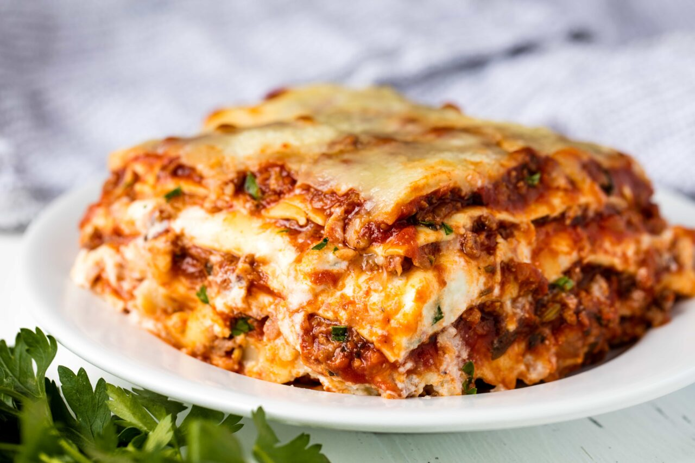
Lasagna
This classic lasagna is made with an easy meat sauce as the base.
Beef
Olive oil
Onion
Garlic
Tomato sauce
Lasagna noodles
Ricotta cheese
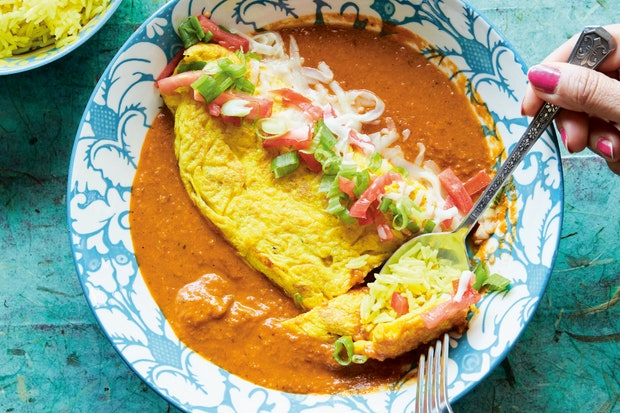
Ros Omelette
The aroma of the omelet begins to waft through the air from vendor stalls throughout Goa.
Coconut oil
Yellow onion
Tomato
Garlic paste
Garam masala
Kosher salt
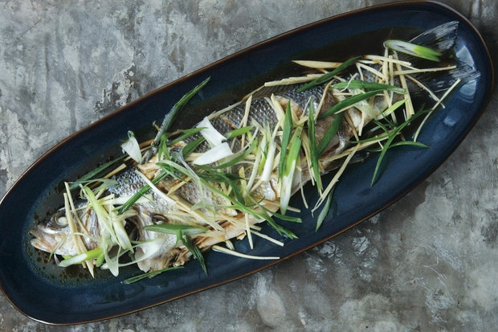
Steamed Fish With Ginger and Scallions
This is a classic preparation for a steamed whole fish. The ginger and green onions.
Ginger
Scallions
Whole fish
Green onion
Soy sauce
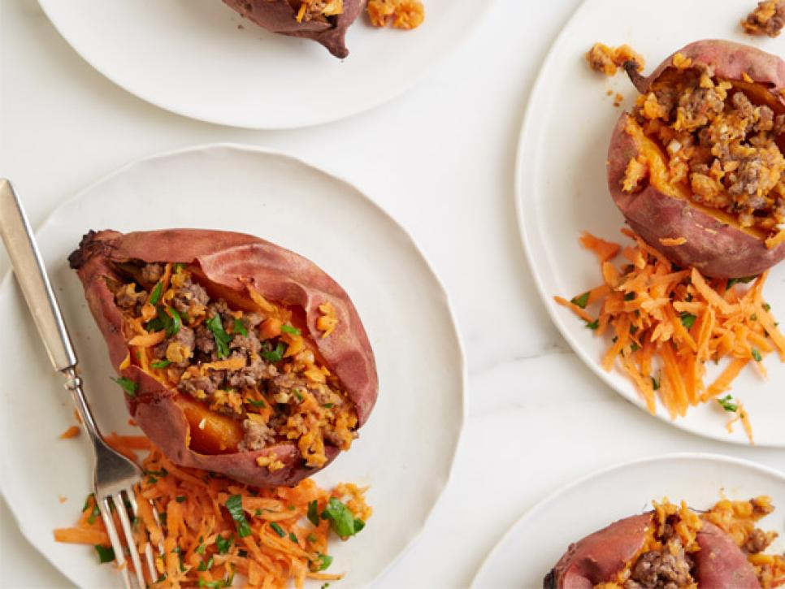
Beefy Stuffed Sweet Potato
Here's a clever trick to pack vegetable into these beefy, Latin-inspired stuffed potato.
Sweet potatoes
Carrots
Onion
Garlic
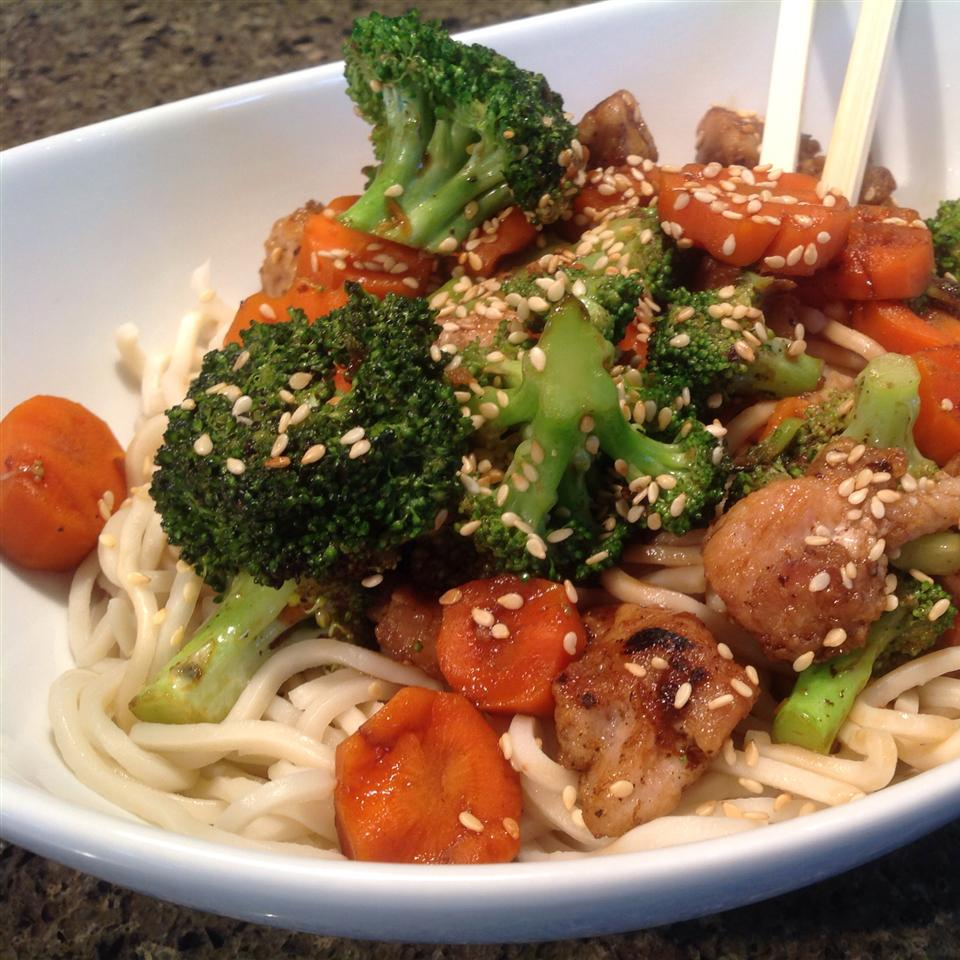
Pork and apple Stir-Fry with Hoisin Sauce
This simple stir-fry has a sweet taste that appeals to teenagers.
Hoisin sauce
Apple
Ginger
Soy sauce
Pork loin
Cornstarch
Peanut oil
Sesame oil
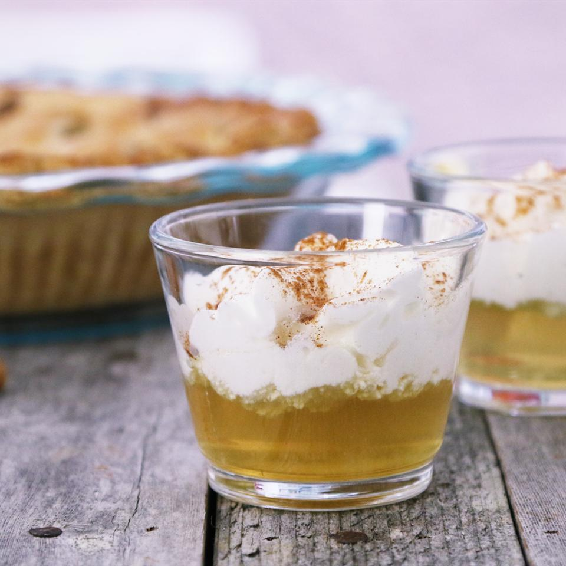
Apple Pie Shot
This is a mouthwatering vodka shot that tastes just like Mom's apple pie.
Vodka
Appple cider
Whipped cream
Ground cinnamon
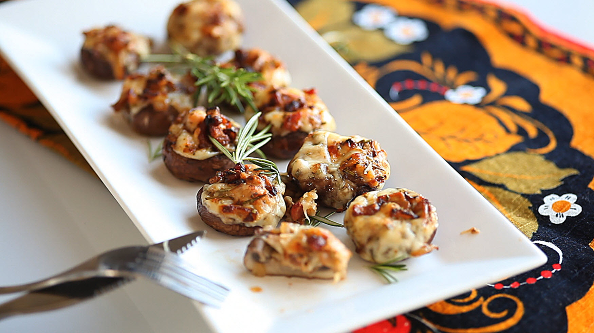
Bacon rosemary stuffed mushrooms
Mushroom stuffed with cheese and bacon infused with onion and rosemary.
Butter
Onion
Bacon
Mushroom
Edam cheese
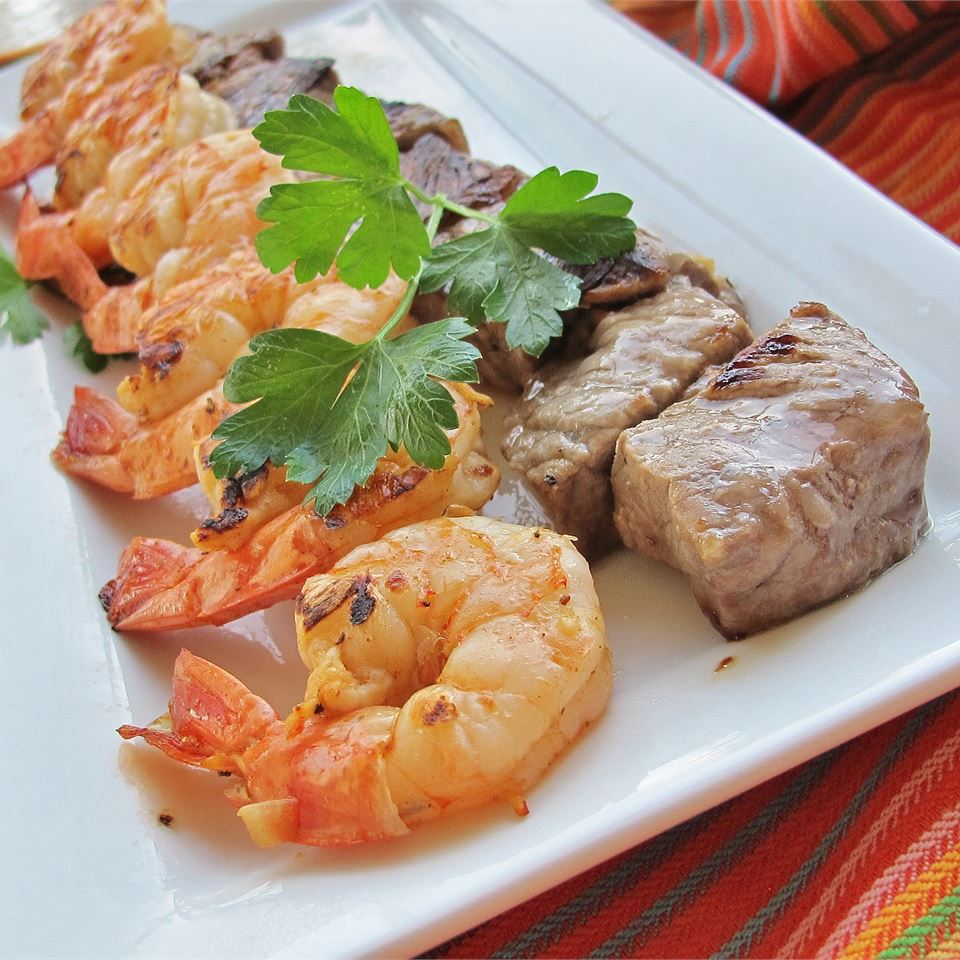
Surf and Turf for Two
This is a simple way to make a special dinner any night of the week.Serve shrimp alongside steaks with your favorite sides.
Olive oil
Butter
Minced onion
White wine
Worcestershire sauce
Lemon juice